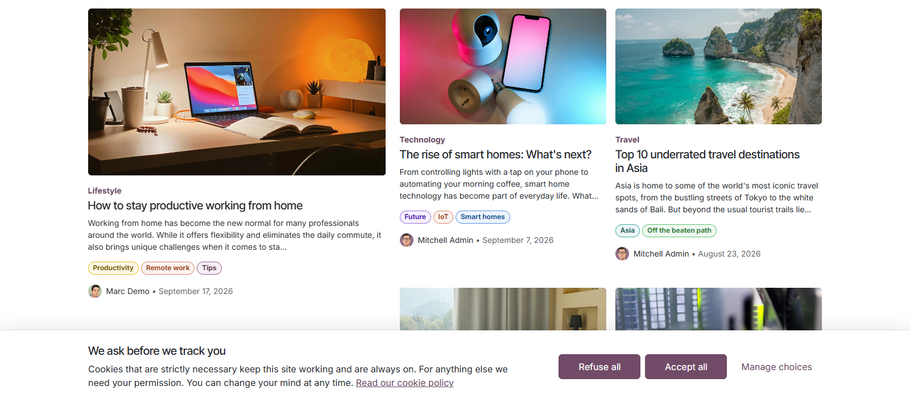
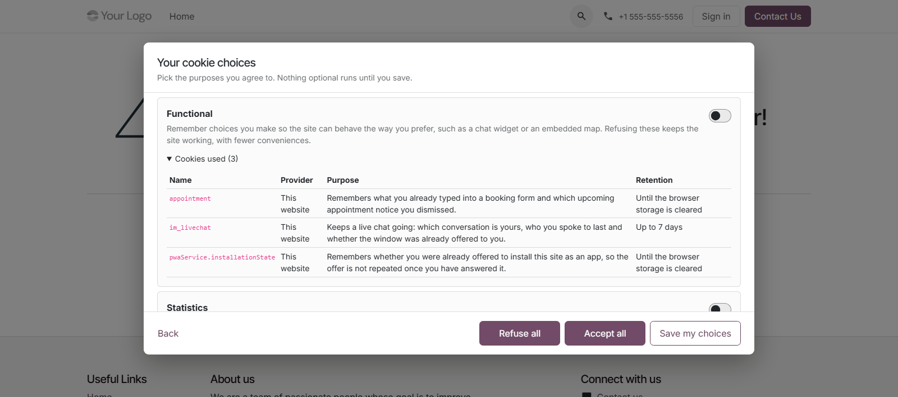
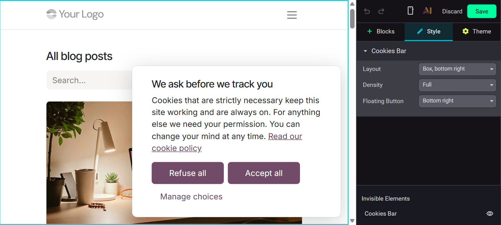
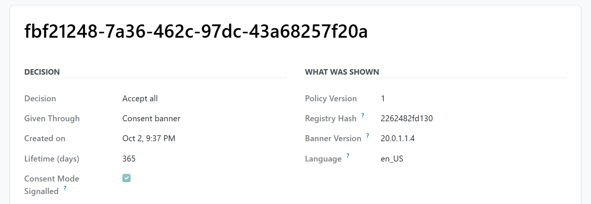
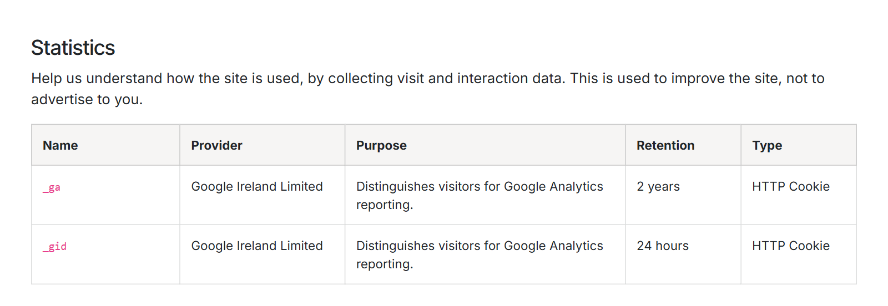

A consent manager in place of Odoo’s cookies bar — a choice per purpose, third-party scripts held back per service, Google Consent Mode v2 and a record of every decision.
Refuse all and Accept all sit side by side in the same size, and nothing optional is ever pre-ticked.
Scripts and embeds of a service are removed server-side until the visitor grants its purpose.
Every decision is filed append-only, together with the disclosure the visitor was shown.

No vendor account, no subscription and no external script. It takes over when you switch on Odoo’s own Cookies Bar, and keeps the rest of Odoo’s cookie handling intact.
Functional, statistics and marketing switched on one by one, each listing the cookies it covers.
A refused video or map leaves a notice in its place, and one click allows that one embed.
All seven Google Consent Mode v2 signals, basic or advanced, and Global Privacy Control always honoured.
Granted and refused purposes, the policy version and a registry fingerprint, never a readable IP.
Odoo’s own cookies declared out of the box, and what your pages set but nobody declared put up for review.
Built to WCAG 2.2 AA, rendered in the first HTML, and shipped in English, German, French, Spanish and Italian.
Manage choices opens the preference centre: one switch per purpose, its description and the cookies it covers, read from your own declarations. Refuse all and Accept all stay on this layer too. Escape never counts as a decision, and a visitor who reopens it only to look leaves without changing what they chose.


Select the Cookies Bar in the website editor for its layout — a bar top or bottom, a box in either corner, a centred dialog — its density and the floating button that brings a visitor back. The notice text is edited in place. Website Settings keeps what carries legal weight in one Cookie Consent section: the bar and its blocking, Consent Mode, the policy version and the policy page.
With the bar on, Odoo adds Cookie Policy and Update Cookie Preferences to the footer, and that link reopens this banner.
Each record holds the decision, the policy version, a fingerprint of the registry in force, the banner version, the language and region rule, the purposes granted and refused, and a salted hash of the truncated IP. A later decision is a new record, never an edit. Adding a purpose, a service or a cookie changes the fingerprint and asks visitors again.


The declarations ship filled in for Odoo’s own cookies and storage keys, each with provider, purpose, retention and type, and a reason for every strictly necessary one. The cookie policy is built from the same registry the banner gates on, so the two never disagree. Region rules for the EU/EEA, the UK and Switzerland decide how long a decision holds.
What you get for free, and what has to be paid work.
Issues and merge requests are welcome on the public repository. They are read — but no response time is promised.
A registry filled in for your own third parties, or a fix on a deadline, is paid work — quoted up front. Write to sale@mukit.at.
LGPL-3. Use it, change it, ship it inside your own work — no licence key, no database count.
Modules written for your process, on your Odoo version.
Odoo joined up with the systems you already run.
Hosting, deployment and upgrades you do not have to watch.
Your team taught the parts of Odoo they actually use.
An agreement, so an answer does not depend on who is free.
Odoo.sh or on-premise, Community or Enterprise.
Website › Configuration › Settings: switch on Cookies Bar, then the Cookie Consent block.
Depends on website alone, nothing external.
Purposes, services and declarations under Configuration › Cookie Consent, the log under Reporting.
Your edits to purposes, services and declarations survive an upgrade, and the consent log is kept as it is.
MuK IT GmbH, Vienna. Author and maintainer.
Send us the services your site loads and the Odoo version, and we will tell you what their declarations need. MuK IT — Austrian Odoo partner, Vienna.